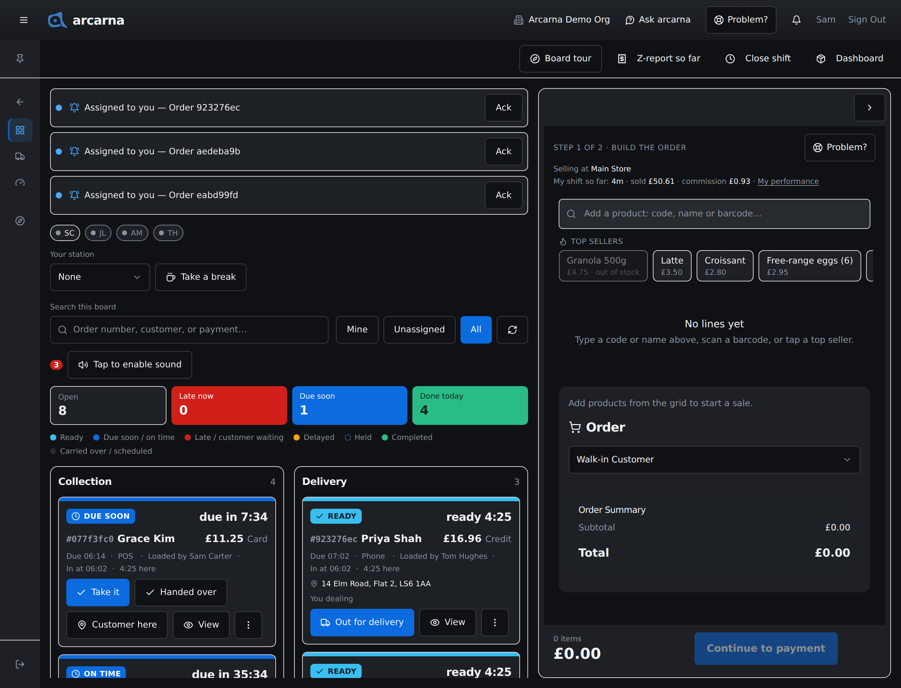
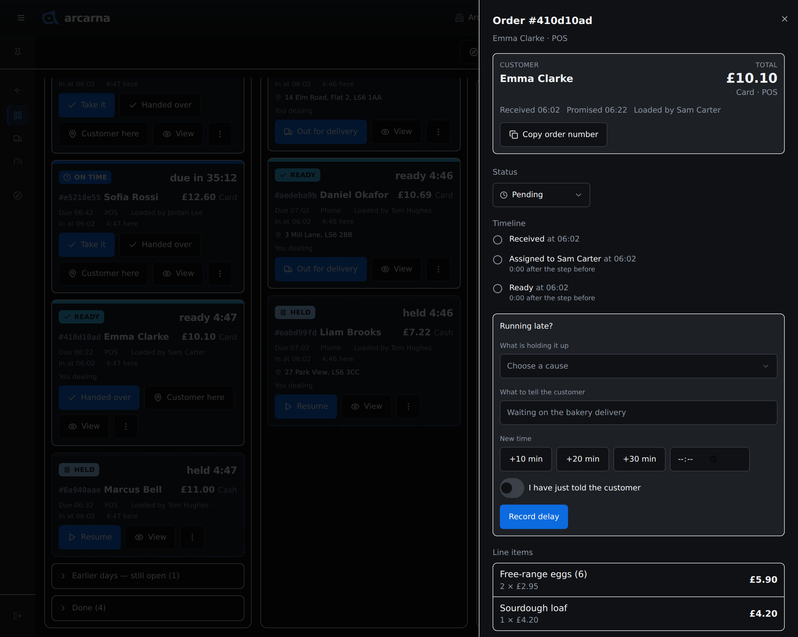
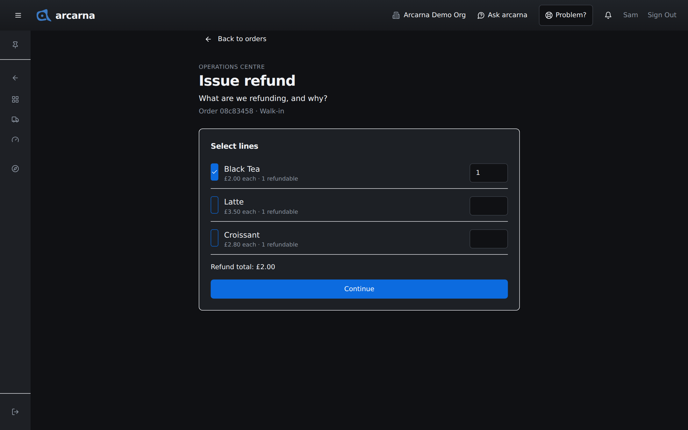
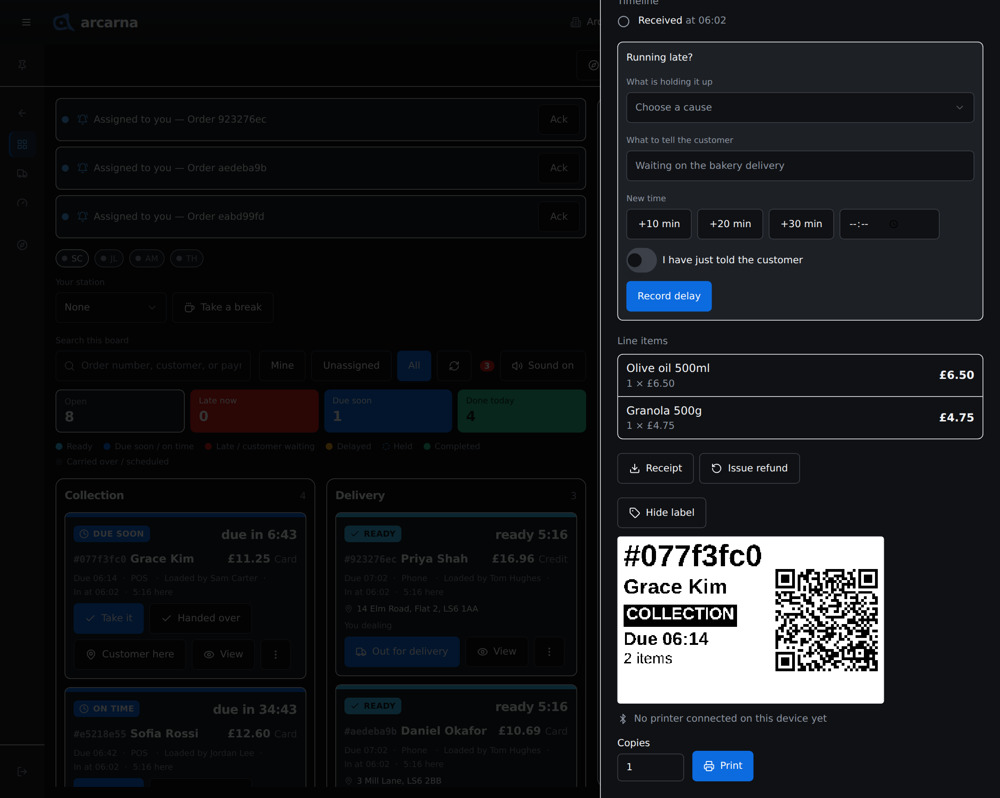
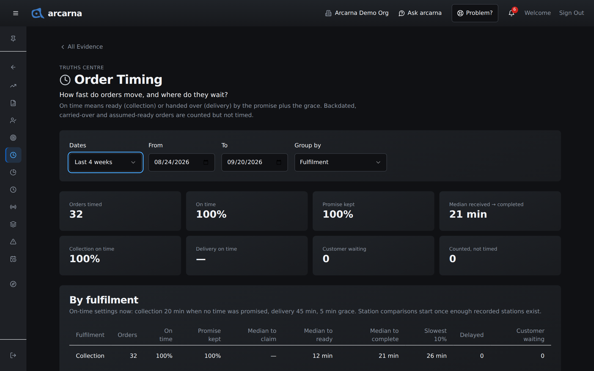

Staff training manual
Staff training manual
Every order that still needs doing, who has it and whether it is late. How to move orders along, change them, refund them, hand over the paperwork and print labels.
What this screen is for
One board for every order in progress
Once a sale is taken (Section 3) it becomes a card on the Operations board. The board answers three questions at a glance: what needs doing now, who is it for, and is it late? Cards move by themselves as colleagues work on other tills, so there is nothing to refresh. Everyone uses it: CASHIER MANAGER
Open it from Operations Centre › Operations board. On a computer the new order form sits beside it; on a phone, use the Board tab.

Across the top
| Part | What it is for |
|---|---|
| Your station | Where you are working today: Collection, Delivery, Both or None. |
| Take a break | Marks you as on break. While you are, Hand over my orders… passes everything you are holding to someone on the board, and Release all puts it back for anyone to take. |
| Who is on | The people on the board now, greyed out when away or on break. |
| Search this board | Find a card by order number, customer or payment. |
| Mine · Unassigned · All | Orders you are looking after, orders nobody has taken yet, or everything. The till remembers your choice. |
| Sound | If it reads Tap to enable sound, tap it so arcarna can chime when an order needs you. After that it reads Sound on or Sound off, and tapping switches between them. |
| Count tiles | Open orders, orders Late now, orders Due soon, and orders Done today. |
| Board tour | Replays the short tour of this screen. |
A strip above the lanes lists what needs you: Assigned to you, Customer waiting, Due soon or Running late, each with its order number. Tap the words to jump to the card, or Ack to say you have seen it.
Reading the board
Lanes and cards
There are two lanes: Collection and Delivery. Each card is one order. A coloured band across the top and a chip with words and an icon say what state it is in; a clock beside the chip counts down to the due time, or up once it is late. Colour is never the only clue: the words always say the same thing.
| Chip | Plain meaning |
|---|---|
| ON TIME | Promised for a time that is not close yet. NO TIME GIVEN means nobody promised a time, so the shop's usual time is used. |
| DUE SOON | The due time is close. |
| LATE | Past the due time, with how long by. OVERDUE · NO TIME GIVEN is the same for an order with no promise. |
| CUSTOMER WAITING | The customer is here and the order is not ready. Clear these first. |
| DELAYED | Someone recorded a delay and a new time. |
| READY | Made up and waiting to be handed over. A delivery on its way shows ON THE ROAD. |
| HELD | Paused, with a dashed outline. Its clock stops. |
| YESTERDAY | Still open from an earlier day. |
| FOR … | A pre-order for a later day. |
| DONE | Handed over or delivered. |
Under each lane are three folded strips: Earlier days — still open, Scheduled (pre-orders for a later day) and Done (orders finished in the last two hours).
What a card shows
| Part | What it tells you |
|---|---|
| #Code and name | The short order number and the customer, or Walk-in. |
| Total and payment | For example £18.40 Cash. |
| The small line | When it is due, how it came in (Walk-in, Phone, WhatsApp or the website), who keyed it in (Loaded by), when it arrived (In at) and how long it has been here. |
| Address | On a live delivery, the address and postcode. Never a phone number. |
| Badges | Urgent, Backdated, Pre-order, Past due, Customer here, and Awaiting card payment for a Card (link) sale not yet paid (tap it to reopen the QR code). |
| Who is dealing | You dealing, or a colleague's name. |
Moving an order along
One main button per card
Each card has one main button, and it always shows the next step. Tap it and the card moves on.
- Take it: you are dealing with this order. If a colleague took it a moment before you, arcarna says Someone got there first and names them.
- Ready: it is made up and waiting.
- For a delivery, Out for delivery: it has left the shop.
- Handed over (collection) or Delivered (delivery): done. A message offers Undo in case you tapped the wrong card.
A collection card also shows Handed over at every stage, for a customer who takes the goods straight away, and Customer here to tell the board they have arrived. A held card's main button is Resume. Every card has View for its details.
More actions
The three-dot button on a card holds everything else.
| Action | What it does | Who |
|---|---|---|
| Pass to… | Gives the order to someone else on the board. | The person dealing with it, or a manager |
| Release | Puts it back for anyone to take. | The person dealing with it, or a manager |
| Not ready | Takes it back out of Ready. | Whoever marked it ready, within 10 minutes, or a manager |
| Put on hold… / Resume | Pauses it, with an optional reason, and starts it again. | Everyone |
| Delay… | Records why it is late and a new time (see below). | Everyone |
| Set due… | Gives an order with no promise a due time: a few minutes from now, or a time. | Everyone |
| Mark urgent | Adds the Urgent badge and moves it up the lane. | Everyone |
| Rate… | On a finished order, one to five stars for how the customer found it. | Everyone |
| Details, delay & documents | Opens the order's details. | Everyone |
| Edit lines | Changes what was sold. | Managers and admins |
| Delete order… | Removes an order taken in error. | Managers and admins |
Running late
When an order will miss its time, record it so the board and the customer both know.
- Open Delay… on the card, or the Running late? box in its details.
- Choose What is holding it up: Stock unavailable, Queue overload, System issue, Prep error or Other.
- Optionally fill in What to tell the customer.
- Pick a New time: +10 min, +20 min, +30 min, or type a time. Switch on I have just told the customer if you have.
Looking inside an order
The order's details
Select View on a card. On a computer the details slide in from the right; on a phone they open inside the board. Looking changes nothing.

| Part | What it shows or does |
|---|---|
| Customer and total | Who it is for, the total, how it was paid and how it came in. Any money refunded shows in red. |
| Times | When it was received, the time promised, any revised time, and who keyed it in. |
| Copy order number | Copies the full order number to paste into a message. |
| Status | Pending, On Hold, Awaiting Customer, Urgent or Completed. The card buttons do the same job and are quicker. |
| Timeline | Each step so far: received, assigned, put on hold, ready, customer arrived, out for delivery, handed over or delivered. |
| Line items and refunds | Each product with quantity and price, then any refunds with who made them. |
| Receipt | Downloads the receipt PDF to hand or send to the customer. |
| Invoice | Managers and admins: downloads the invoice PDF (see below). |
| Issue refund | Starts a refund (see below). |
| Print label | Prints an order label (see below). |
For a delivery, the details also hold the address, the driver's call and a way to correct the address. Those are covered in Section 5.
Manager tasks
Amending and deleting an order
Changing what was sold, or removing an order, is a MANAGER job. A cashier does not see these buttons and should ask a manager.
Editing the lines
- Choose Edit lines from the card's three-dot menu or the details panel. The Edit order #… window opens.
- Add a product with the search box, change a line's Quantity or Unit price, or use Remove line. A price is needed on every line: use 0 for something given free.
- Check the foot of the window: Subtotal, Discounts kept (when the sale had any), VAT with the rate used, and Total. The order keeps its discounts, and the shop's own VAT rate is used.
- Select Save changes. arcarna confirms with the new total.
Deleting an order
Deleting is permanent. Use it only for an order taken in error. A return or a cancellation is a refund, so the record stays honest.
- Choose Delete order…. The window asks Delete this order?
- Tick I understand this order will be permanently deleted.
- Select Delete permanently. Stock reserved for the order is released. Customer and payment records elsewhere are not affected.
Giving money back
Refunding an order
A refund returns money for some or all of an order: a damaged item, the wrong product, or a change of mind. It keeps a full record of what was returned, why and by whom. Open the order's details and select Issue refund. The refund runs in three short steps.
- Select lines. Tick each item being returned and set the quantity. Each line says how many are still refundable, so nothing can be refunded twice. The Refund total adds up as you go. Select Continue.
- Reason & method. Choose the Reason and the Refund method, and add Notes if useful. Other needs a note saying what the reason is. Select Review.
- Confirm refund. Check the amount, method and reason, then select Confirm refund. It appears under the order's refunds straight away.

| Reason | When to use it |
|---|---|
| Damaged | The item was damaged. |
| Wrong item | The customer was given the wrong product. |
| Customer changed mind | A return with nothing wrong with the goods. |
| Defect | The item is faulty. |
| Other | Anything else. Say what it was in the notes. |
| Method | What it means |
|---|---|
| original | Back the way the customer paid. The usual choice. |
| cash | Cash from the drawer. |
| store credit | Credit for the customer to spend later, issued as a gift card for the amount. |
The paperwork
Receipts and invoices
Every till sale has a receipt. Anyone can download it from the order's details with Receipt.
An invoice is the formal, numbered document a business customer keeps for their accounts. Invoices are for MANAGER and above. arcarna issues one when a sale goes on a tab, or when a customer asks for one.
- From an order's details, select Invoice.
- If the sale only has a receipt, arcarna asks whether to issue a numbered invoice because the customer asked for one. Confirm, and the PDF downloads.
- To find, print or send invoices later, open Finance Centre › Invoices. Its tiles show Paid total, Owed, Overdue and Rows shown for whatever the search, status and date window are showing.
- Each row's PDF menu has Open PDF (new tab), Print via browser, Download PDF and Email invoice to customer. arcarna sends the email itself; if email is not set up yet, that choice is greyed out and says why. Section 8 covers invoices in full.
Labels
Printing an order label
arcarna prints 50 × 30 mm labels on a Niimbot B1 label printer over Bluetooth. An order label carries the order code, the customer's name only, collection or delivery, the due time, the number of items and a QR code that opens the order. It never carries a phone number.
- Open the order's details and select Print label. A preview of the label appears, exactly as it will print.
- Under the preview, a line says whether a printer is connected, for example Connected to B1-… · battery 80%.
- Set Copies if you need more than one, then select Print. The first time, the browser asks you to choose the printer.
- Select Hide label when you are done.

| Device | Can it print? |
|---|---|
| Chrome or Edge on a computer | Yes. |
| iPhone or iPad | Only in the free Bluefy app. Open arcarna there to print. |
| Safari on a Mac | No. Open arcarna in Chrome instead. |
If the device cannot print, the label panel says what to do instead of showing Print.
Managers also have a label button on each product in Stock Centre › Products. A product label shows the name, price and barcode, never the cost (Section 6).
Manager · how fast orders move
Order Timing
Truths Centre › Order Timing answers how fast do orders move, and where do they wait? It is Evidence, for MANAGER and above. On time means ready (collection) or handed over (delivery) by the promised time plus the shop's grace minutes.
- Pick the Dates: Today, Yesterday, This week, Last week, Last 4 weeks, This month, Last month, or Custom with From and To.
- Choose Group by: Fulfilment, Assignee (who claimed it), Completer, Loader (who keyed it in), Hour received, Day or Channel.
- Read the tiles, then the table row by row.

| Figure | What it means |
|---|---|
| Orders timed | Orders the timings are worked out from. |
| On time | The share finished by the promise plus the grace. |
| Promise kept | The share that met a time actually promised to the customer. |
| Median received → completed | The typical time from arriving to being done. |
| Median to claim / ready / complete | In the table: where the time goes, stage by stage. |
| Slowest 10% | How long the slowest orders took. |
| Delayed · Customer waiting | How many had a recorded delay, or kept a customer waiting. |
| Counted, not timed | Backdated, carried-over and assumed-ready orders: counted, but left out of the timings. |